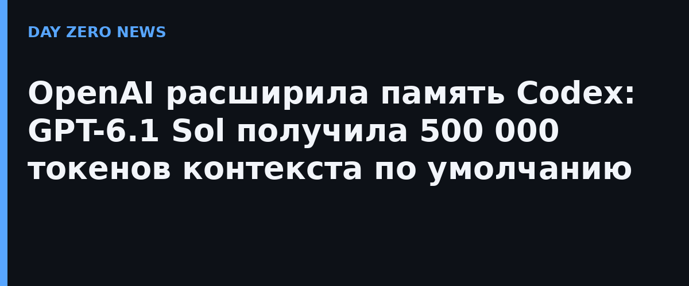

Руководитель продукта Codex в OpenAI Тибо Соттио объявил в X, что стандартная длина контекста GPT-6.1 Sol в Codex и ChatGPT Work поднята с 272 000 до 500 000 токенов — рост примерно на 80%. Отдельного пресс-релиза компания не публиковала: только этот пост и обновлённые лимиты в самом продукте. При желании лимит можно изменить вручную: технически модель поддерживает около миллиона токенов (по данным разборов — 1 050 000, из них до 922 000 на вход и до 128 000 на вывод). Обновление выкатили 11 октября, меньше чем через две недели после релиза модели.
Для агентного кодинга это не косметика: на прежних 272 000 токенов длинные сессии упирались в «упаковку контекста» (compaction) — модель сжимала историю беседы и начинала терять детали ранних этапов задачи: принятые решения, найденные баги, договорённости о структуре кода. По словам Соттио, 500 000 — тщательно протестированный баланс между надёжностью и скоростью, который заметно снижает частоту таких упаковок, а в OpenAI обещают и дальше поднимать планку.
Отдельной платы за «длинный контекст» не появится: расход по-прежнему списывается из лимитов подписки как обычно. Для справки: GPT-6.1 Sol вышла 29 сентября, стоит 2 и 10 долларов за миллион токенов вход/выход — в пять раз дешевле флагманской GPT-6 Astra, которой она почти не уступает в агентном программировании и работе за компьютером.
Контексты в сотни тысяч токенов стали стандартной гонкой: 500-тысячные окна уже есть у свежих версий Grok, Claude держит плоские цены вплоть до миллиона токенов, открытые модели подтягиваются. Для пользователей Codex практичный смысл проще: агент теперь способен удержать в голове целиком крупный рефакторинг или небольшой проект, не теряя нить на середине пути.